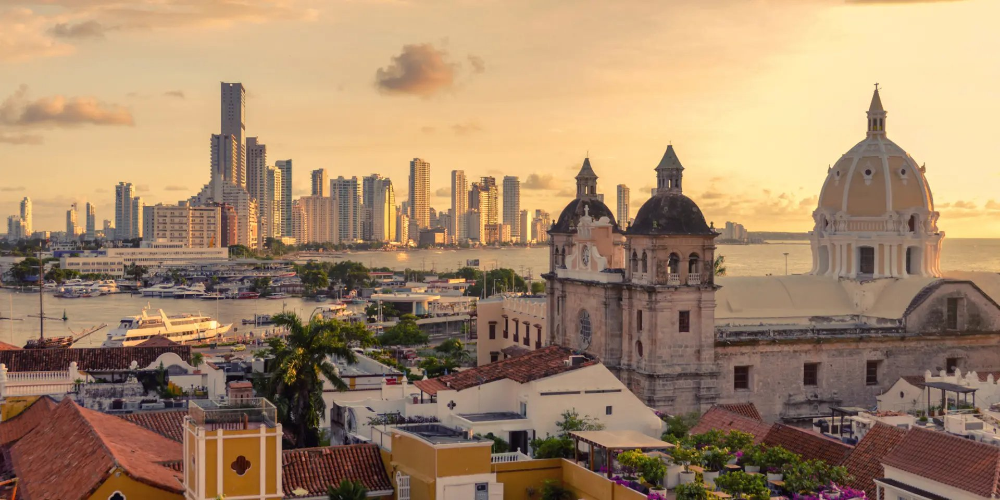
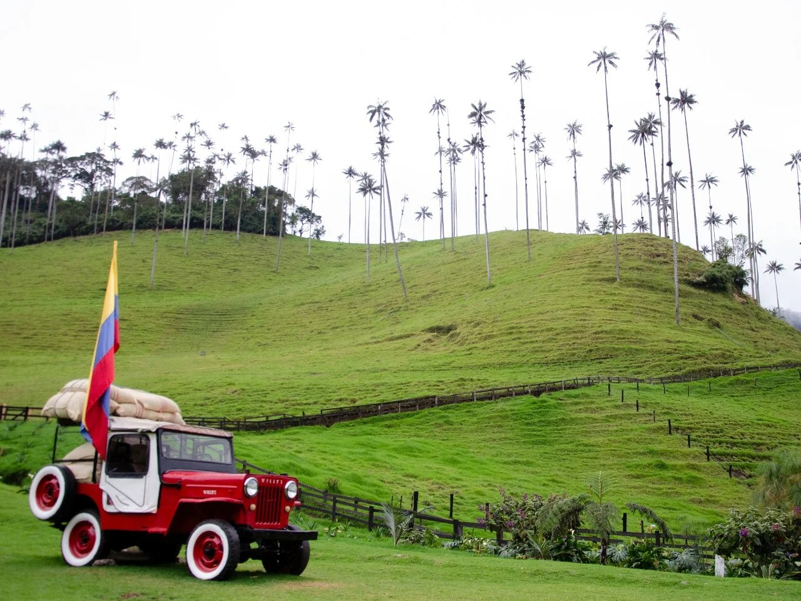
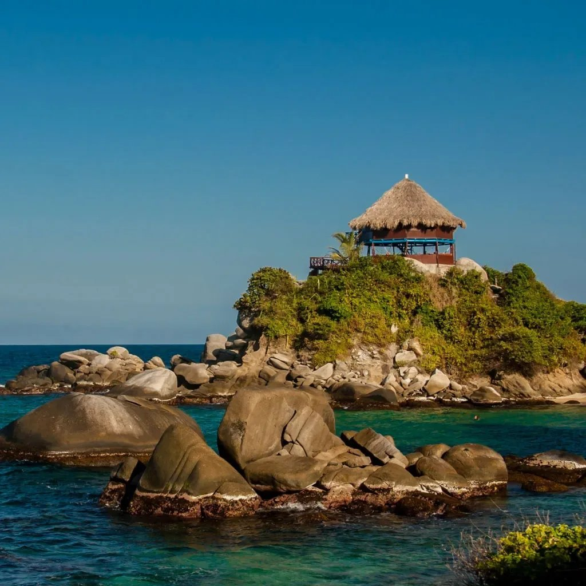
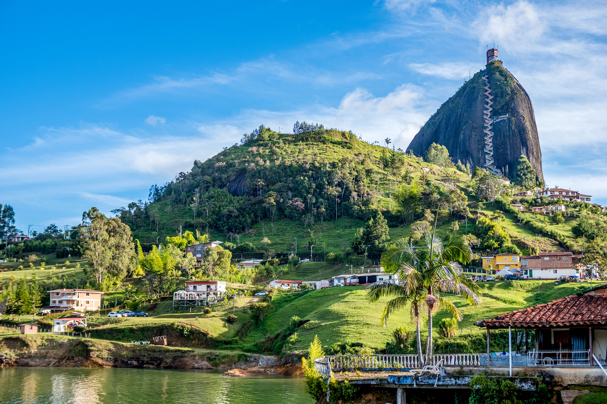
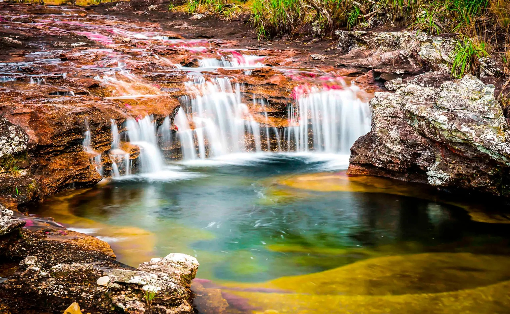
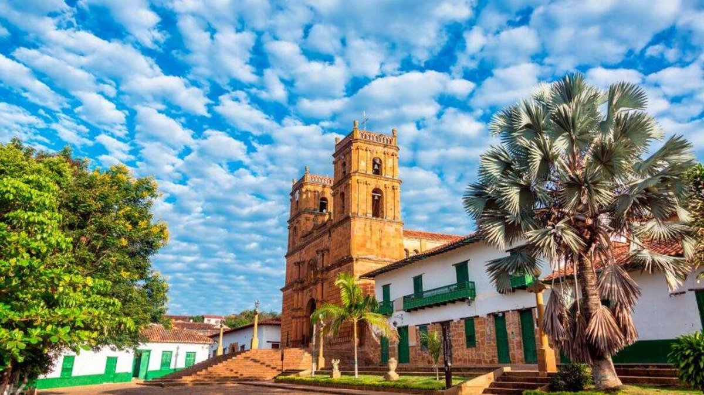

Cartagena de Indias
Historia viva entre murallas coloniales, calles coloridas y playas cristalinas en el Caribe.
Caribe · Cultura y PlayaDesde playas caribeñas y selvas amazónicas hasta pueblos coloniales en los Andes. Encuentra rutas, consejos y experiencias inolvidables.
Explorar destinos
Historia viva entre murallas coloniales, calles coloridas y playas cristalinas en el Caribe.
Caribe · Cultura y Playa
Camina entre las palmas de cera más altas del mundo en el corazón del Paisaje Cultural Cafetero.
Quindío · Naturaleza y Café
Bahías de arena blanca rodeadas por la selva húmeda al pie de la Sierra Nevada.
Magdalena · Ecoturismo
Sube los 740 escalones del monolito y recorre un pueblo famoso por sus zócalos vibrantes.
Antioquia · Aventura
Conoce el río de los cinco colores en la Serranía de la Macarena, una maravilla natural única.
Meta · Expedición
Arquitectura en piedra tapia pisada, miradores sobre el cañón y caminos reales históricos.
Santander · PatrimonioDiciembre a Marzo y Julio a Agosto para temporada seca en la mayoría de regiones.
WhatsApp +57 310 000 0000